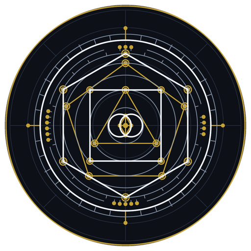

GEOMETOR
•
elementarium
Header
Optical Architecture
Glossary
Mark I Desktop Prototype
Log
Zero-Context Primer
Modules
Cold-Boot Recovery Model
Index
A
|
B
|
C
|
D
|
E
|
F
|
G
|
I
|
M
|
N
|
O
|
P
|
R
|
S
|
T
|
U
|
V
A
analyzer_station_mm (geometor.elementarium.bench.MarkIBenchSpec property)
B
bench (geometor.elementarium.bench.BenchMixin property)
BenchMixin (class in geometor.elementarium.bench)
bootstrap_concept (geometor.elementarium.plates.PrimerPlate attribute)
Brewster Spread
brewster_angle_deg (geometor.elementarium.bench.MarkIBenchSpec property)
brewster_spread (geometor.elementarium.bench.MarkIBenchSpec property)
brewster_spread() (in module geometor.elementarium.tiers)
build_keystone_model() (geometor.elementarium.bench.BenchMixin method)
build_keystone_plate_model() (in module geometor.elementarium.bench)
build_parser() (in module geometor.elementarium.cli)
C
collimator_station_mm (geometor.elementarium.bench.MarkIBenchSpec property)
D
Dead-Reader Paradox
DEFAULT_MARK_I_BENCH (in module geometor.elementarium.bench)
E
Elementarium (class in geometor.elementarium.elementarium)
export_keystone_svg() (geometor.elementarium.plates.PlatesMixin method)
export_plate_svg() (in module geometor.elementarium.plates)
F
Form Birefringence
fused_silica_brewster_spread() (geometor.elementarium.tiers.TiersMixin method)
FUSED_SILICA_ND (in module geometor.elementarium.tiers)
G
geometor.elementarium.__main__
module
geometor.elementarium.bench
module
geometor.elementarium.cli
module
geometor.elementarium.elementarium
module
geometor.elementarium.plates
module
geometor.elementarium.tiers
module
get_plate() (geometor.elementarium.plates.PlatesMixin method)
get_tier() (geometor.elementarium.tiers.TiersMixin method)
I
illumination (geometor.elementarium.tiers.OpticalTier attribute)
index (geometor.elementarium.tiers.OpticalTier attribute)
information_role (geometor.elementarium.tiers.OpticalTier attribute)
M
main() (in module geometor.elementarium.__main__)
MarkIBenchSpec (class in geometor.elementarium.bench)
module
geometor.elementarium.__main__
geometor.elementarium.bench
geometor.elementarium.cli
geometor.elementarium.elementarium
geometor.elementarium.plates
geometor.elementarium.tiers
N
name (geometor.elementarium.tiers.OpticalTier attribute)
O
optical_encoding (geometor.elementarium.plates.PrimerPlate attribute)
OpticalTier (class in geometor.elementarium.tiers)
P
PHI (in module geometor.elementarium.bench)
physical_mechanism (geometor.elementarium.tiers.OpticalTier attribute)
plate_id (geometor.elementarium.plates.PrimerPlate attribute)
plates (geometor.elementarium.plates.PlatesMixin property)
PlatesMixin (class in geometor.elementarium.plates)
PRIMER_PLATES (in module geometor.elementarium.plates)
PrimerPlate (class in geometor.elementarium.plates)
R
refractive_index (geometor.elementarium.bench.MarkIBenchSpec attribute)
render_keystone_svg() (in module geometor.elementarium.plates)
reticle_size_mm (geometor.elementarium.bench.MarkIBenchSpec attribute)
reticle_station_mm (geometor.elementarium.bench.MarkIBenchSpec property)
run_cli() (in module geometor.elementarium.cli)
S
substrate (geometor.elementarium.plates.PrimerPlate attribute)
summary() (geometor.elementarium.elementarium.Elementarium method)
T
tier_id (geometor.elementarium.plates.PrimerPlate attribute)
(geometor.elementarium.tiers.OpticalTier attribute)
tiers (geometor.elementarium.tiers.TiersMixin property)
TIERS (in module geometor.elementarium.tiers)
TiersMixin (class in geometor.elementarium.tiers)
title (geometor.elementarium.plates.PrimerPlate attribute)
U
unit_chord_mm (geometor.elementarium.bench.MarkIBenchSpec attribute)
unlock_prerequisite (geometor.elementarium.tiers.OpticalTier attribute)
V
Vesica Keystone